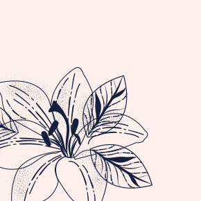

Интервью Владимира Набокова
— Вы прожили в Германии 15 лет, с 1922 по 1937 год. Судя по тому, как вы описывали Германию и немцев в книгах той поры, они со временем производили на вас все более и более мрачное впечатление.